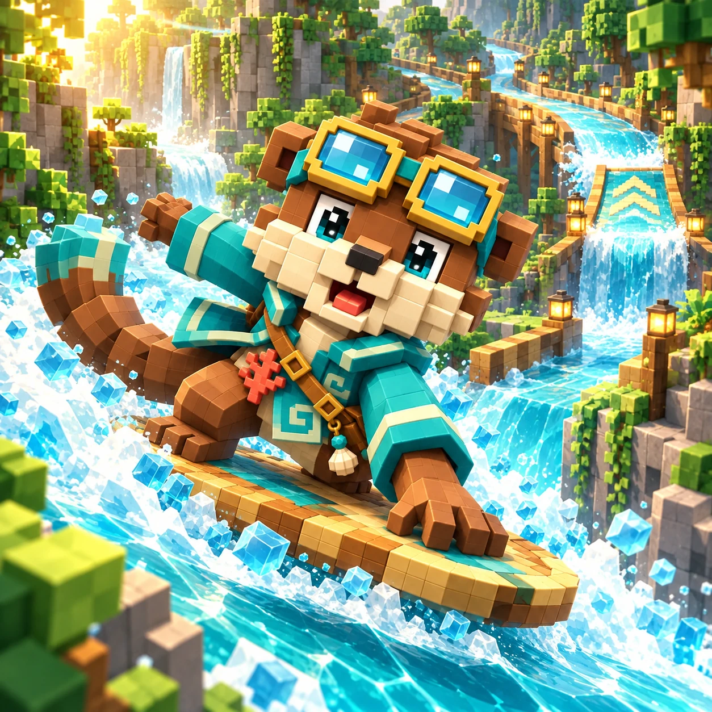

珊瑚夜航
永久滑板与尾流外观，不改变能力。
永久
5 钻石

滑过分流水道，抓准跳台落点与潮闸时机，挑战六十条航线。
关卡 1 / 60
带诺里挑战60关水道竞速，读懂水流、跳过标示跳台、依序收集航线旗标，并用三款免费滑板掌握潮闸时机。
带诺里通过指定浮标，再依关卡卡片的目标抵达终点。有些航线要求名次、跳台落点、通过顺序或剩余稳定度。
滑过分流水道，抓准跳台落点与潮闸时机，挑战六十条航线。
← →／A D：转向 · Space：跳跃 · 按住 X：潮锚停泊 左右拖曳转向 · 按跳跃 · 按住潮锚停泊 在水面可随时按跳跃，落地后可再次起跳；空中转向比水上较弱。 在泊位按住潮锚，最多停两秒；潮位与对手仍会前进。 每局有三格稳定度，撞到障碍或错过落点可能扣格。落水会回到已通过的浮标，成绩加三秒。指定浮标必须按顺序通过，跳跃不能跳过它们。必要潮闸关闭时有安全等候点。 碰到河岸只会减速，不扣稳定度，也不会回到浮标。
通关解锁下一关，重玩可改善星数与最佳时间。结算固定提供关卡、下一关、重玩；失败或最后一关的下一关会维持停用。电脑对手是本机 AI，不是在线玩家。
离开水面前先看下一个落点。窄捷径若容易落水，较长的稳定水线可能更快。遇到低桥，留在水上可能比跳跃更好。潮汐关比较安全支流与等闸，将潮锚留给真正需要停留的窗口。
初始即可用溪流板。通关第5关取得快流板，第15关取得苇岸板，第30关取得潮锚，都是免费永久解锁。所有关卡均以免费滑板设计，钻石外观不改能力。
进度只在此浏览器，没有账号或云端存档。成功保存会保留解锁、滑板选择、星数与最佳时间。保存失败时请保留此页并重试；清除浏览器数据或换设备不会保留这些进度。
在水面按跳跃即可起跳，落地后才能再跳。指定跳台须落入标示落点才会计数。
每局有三格稳定度，撞到障碍或错过落点可能扣格。落水会回到已通过的浮标，成绩加三秒。指定浮标必须按顺序通过，跳跃不能跳过它们。必要潮闸关闭时有安全等候点。 碰到河岸只会减速，不扣稳定度，也不会回到浮标。
初始即可用溪流板。通关第5关取得快流板，第15关取得苇岸板，第30关取得潮锚，都是免费永久解锁。所有关卡均以免费滑板设计，钻石外观不改能力。
不会。珊瑚夜航花费五钻石永久取得，只改外观，速度、转向与关卡规则不变。
进度只在此浏览器，没有账号或云端存档。成功保存会保留解锁、滑板选择、星数与最佳时间。保存失败时请保留此页并重试；清除浏览器数据或换设备不会保留这些进度。
永久滑板与尾流外观，不改变能力。
永久
5 钻石
永久滑板与尾流外观，不改变能力。
5 钻石
本次航程不会保留；已保存的关卡、滑板与纪录不受影响。